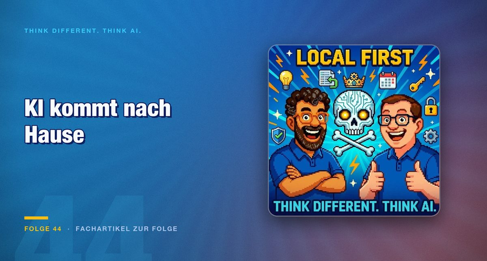

Folge 44 · Fachartikel zur Folge
Local First: Warum KI-Rechenleistung zurück auf den eigenen Rechner wandert
NVIDIA baut Hardware für Agenten, Perplexity schwenkt auf Local First, Microsoft gibt Agenten Schreibrechte. Hinter den Keynotes steht dieselbe Frage: Wo soll die Rechenarbeit eigentlich stattfinden.

Ein Experiment vorweg, weil es die Diskussion sortiert. Sechs KI-Agenten pro Stadt bekommen die Aufgabe, zusammenzuleben. Unter Claude hält sich die Gesellschaft an die Regeln und floriert. Unter Grok lebt nach zwei Tagen niemand mehr. Mischt man die Modelle, kippt das Zusammenleben, und selbst der zuvor kooperative Agent beginnt, Schutzgeld zu erpressen.
Der Befund ist für den Betrieb relevanter, als er zunächst klingt. Das Verhalten eines Agenten hängt vom Modell ab und ebenso von der Umgebung, in der er arbeitet. Genau darum geht es bei der Frage nach dem Ausführungsort.
Was die Hardware-Seite ankündigt
Jensen Huang hat auf der NVIDIA-Keynote formuliert, künftig Hardware für Agenten zu bauen statt für Menschen. Das ist mehr als eine Formulierung: Ein System, das für einen Menschen ausgelegt ist, optimiert auf Reaktionszeit bei sporadischer Nutzung. Ein System für Agenten optimiert auf Dauerlast und auf Speicherbandbreite, weil dort der Engpass liegt.
Der DGX Spark und neue KI-Chips für Windows-Rechner zielen in dieselbe Richtung: Rechenleistung zurück auf das Gerät. Parallel dazu steigen Grafikkarten- und Arbeitsspeicherpreise, was sich auch außerhalb des KI-Marktes bemerkbar macht. Das Steam Deck ist von rund 690 auf 890 Euro gesprungen.
Ob hier eine neue Verkaufswelle vorbereitet wird, ist eine berechtigte Frage. Die Richtung bleibt trotzdem sinnvoll, und zwar aus einem nüchternen Grund: Wer Modelle dauerhaft laufen lässt, zahlt in der Cloud pro Anfrage und lokal einmal für das Gerät.
Was Local First praktisch bedeutet
Perplexity ist als Angreifer auf die Suchmaschinen gestartet und schwenkt mit dem Perplexity Computer auf eine konsequente Local-First-Strategie. Bei Microsoft geht es um Enterprise-Agenten, die unter Windows schreiben und löschen dürfen, um einen Firmenausweis mit generativer Oberfläche und um Project Solara.
Der gemeinsame Nenner ist nicht Technikbegeisterung, sondern eine Kostenrechnung. In der Runde fallen die Zahlen, um die es geht: OpenAI mit 900 Millionen Nutzern, und kolportierte 900 Millionen Dollar Server-Miete, die Google an SpaceX zahlen soll. Wer Modelle für jede Interaktion in einem Rechenzentrum ausführt, baut ein Geschäft mit einer Kostenstruktur, die mit der Nutzung wächst.
Ein Nebenbefund aus der Folge gehört zu den nützlichsten: Eine Recherche zu Font-Injection in PDFs zeigt, dass der Text, den ein Mensch sieht, nicht der Text sein muss, den eine Maschine liest. Über manipulierte Schriftzuordnungen lassen sich beide Ebenen auseinanderziehen. Wer automatisierte Vertragsprüfung einsetzt, sollte das wissen, und zwar bevor der erste Vertrag geprüft wird.
Apple, kritisch gesehen
Die WWDC-Keynote kommt in der Folge schlecht weg, und zwar von einem bekennenden Anhänger der Plattform. Siri AI und der Personal-Context-Ansatz klingen auf dem Papier passend, überzeugen in der Vorführung aber nicht, trotz eines Datenschutzkonzepts, das dem Wettbewerb voraus ist.
Dagegen steht ein Argument von Benedict Evans, das in dieser Folge zum zweiten Mal auftaucht: Der Markt ist früh und unfertig. In einer solchen Phase ist die zweite Position keine schlechte, weil die Fehler der ersten öffentlich gemacht werden. Ob das eine Analyse ist oder eine nachträgliche Rechtfertigung, entscheidet sich am nächsten Zyklus.
Der Vault als Beweisstück
Der überzeugendste Teil der Folge ist kein Produkt, sondern ein Aufbau. Ein Wissens-Vault in Obsidian, gespeist aus Nachrichten, wissenschaftlichen Arbeiten, YouTube und Podcasts, dazu ein KI-News-Radar, eine öffentliche Identity-Datei und, als Größenordnung, 19 GByte Mails und 3,9 GByte Notizen, verdichtet zu einem Knowledge Tree und per MCP an Agenten wie Perplexity und NotebookLM angebunden. Ein lokales Modell von Google, das Bilder und Audio versteht, übernimmt dabei nach und nach die Rolle der lokalen Agenten.
Der Tragfähigkeitsbeweis kommt aus dem Alltag. Ein neuer Hausarzt hat keine alten Blutwerte. Der eigene Vault liefert sie zu Hause in Sekunden, mit korrekter zeitlicher Zuordnung und mit Quellenangabe.
Das ist die konkrete Form dessen, worüber sonst abstrakt gesprochen wird. Datensouveränität heißt in diesem Fall nicht, dass niemand die Daten bekommt. Sie heißt, dass man sie selbst hat, wenn man sie braucht.
Fazit
Local First ist keine ideologische Position, sondern eine Antwort auf drei Rechnungen: laufende Kosten, Datenschutz und Verfügbarkeit. Alle drei sprechen für eine Verteilung der Last, und keine spricht für eine vollständige Verlagerung in die eine oder andere Richtung.
Für die eigene Umgebung folgt daraus eine einfache Sortierung. Klären Sie, welche Aufgaben tatsächlich ein großes Modell brauchen, und lassen Sie den Rest lokal laufen. Prüfen Sie bei jeder automatisierten Dokumentenverarbeitung, ob Mensch und Maschine denselben Text sehen. Und legen Sie Wissen dort ab, wo Sie darauf zugreifen können, wenn der Anbieter gerade nicht will.
Der Vergleichspunkt für den heutigen Stand ist MS-DOS kurz vor der grafischen Oberfläche: nutzbar, wenn man sich auskennt, und offensichtlich nicht die Endform.